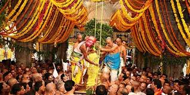

Cities
Hyderabad
- Charminar: An iconic 16th-century mosque known for its stunning architecture and bustling market surrounding it.
- Golconda Fort: A historic fort with impressive acoustics and beautiful views of the city.
- Hussain Sagar Lake: A large artificial lake famous for the massive Buddha statue in the center.
- Ramoji Film City: A vast film complex offering guided tours, live shows, and numerous attractions.
- Birla Mandir: A beautiful temple built from white marble, offering serene views of the city.
- Salar Jung Museum: One of the largest museums in India, housing an extensive collection of art and artifacts.
Warangal
- Warangal Fort: A historical fort known for its stunning architecture and beautiful gateways.
- Kakatiya Musical Garden: A vibrant garden with musical fountains, perfect for relaxation and family outings.
- Thousand Pillar Temple: An ancient temple famous for its intricate carvings and architectural brilliance.
- Bhadrakali Temple: An ancient temple dedicated to Goddess Bhadrakali, situated on a picturesque lake.
- Pakhal Lake: A beautiful man-made lake surrounded by hills, ideal for boating and picnics.
- National Handicrafts Museum: A museum showcasing traditional handicrafts and arts from the region.
Nizamabad
- Nizam Sagar Dam: A significant dam on the Manjira River, offering picturesque views and boating opportunities.
- Ali Sagar Lake: A beautiful lake surrounded by gardens, ideal for picnics and relaxation.
- Rudra Shiva Temple: An ancient temple dedicated to Lord Shiva, known for its serene atmosphere and architecture.

- Bhagyanagar Ranganathaswamy Temple: A revered temple known for its stunning architecture and spiritual significance.
- Pocharam Wildlife Sanctuary: A protected area rich in flora and fauna, perfect for nature enthusiasts.
- Jagityal Fort: An ancient fort offering a glimpse into the region's history and culture.
Khammam
- Khammam Fort: A historic fort offering panoramic views of the city, known for its ancient architecture.
- Parnasala: A picturesque village near Khammam, famous for its scenic beauty and cultural significance.
- Bhadrakali Temple: An ancient temple dedicated to Goddess Bhadrakali, attracting numerous pilgrims.
- Thukkuguda: A serene location known for its natural beauty and tranquility, ideal for relaxation.
- Kinnerasani Wildlife Sanctuary: A protected area rich in flora and fauna, perfect for nature lovers.
- Rudramadevi Temple: A historical temple dedicated to Goddess Rudramadevi, showcasing stunning architecture.
Karimnagar
- Karimnagar Fort: A historic fort offering panoramic views of the city and a glimpse into its rich heritage.
- Kondagattu Anjaneya Swamy Temple: A revered temple located on a hill, known for its stunning architecture and serene surroundings.
- Lower Manair Dam: A beautiful dam surrounded by lush greenery, perfect for picnics and nature walks.
- Vemulawada Rajarajeshwara Temple: An ancient temple known for its historical significance and beautiful architecture.
- Elgandal Fort: A scenic fort with historical ruins, offering a glimpse into the region's past.
- Jagityal Fort: A lesser-known fort with beautiful surroundings, ideal for history enthusiasts.
Other Attractions
Medak Church
- Medak Church: Known as one of the largest churches in India, this stunning Gothic-style church is famous for its beautiful stained glass windows and impressive architecture.
- Medak Fort: A historical fort offering panoramic views of the surrounding area, showcasing the rich heritage of the region.
- Shankarampet Reservoir: A scenic spot ideal for picnics and nature walks, with opportunities for birdwatching.
- Jain Temple: A beautifully constructed temple reflecting exquisite architecture and tranquility.
- Church of St. John: Another significant church in the area known for its serene environment.
- Medak Wildlife Sanctuary: A haven for wildlife enthusiasts, offering opportunities to see diverse flora and fauna.
Warangal Kakatiya Ruins
- Kakatiya Temple: An ancient temple known for its intricate carvings and architectural beauty, showcasing the brilliance of Kakatiya craftsmanship.
- Warangal Fort: A historic fort built in the 13th century, offering stunning views and insights into the region's rich history.
- Thousand Pillar Temple: A famous temple dedicated to Lord Shiva, noted for its exquisite pillars and stunning architecture.

- Ramappa Temple: A UNESCO World Heritage Site famous for its stunning architecture and exquisite sculptures.
- Warangal Lake: A serene lake ideal for picnics and enjoying the natural beauty of the area.
- Bhadrakali Temple: An ancient temple dedicated to Goddess Bhadrakali, located near the picturesque lake.
Festivals and Cultural Events
Bathukamma Festival
Bathukamma is a vibrant floral festival celebrated predominantly in Telangana, marking the beginning of the festive season. It usually takes place in the month of September or October, during the Durga Navratri. The festival is dedicated to the Goddess Bathukamma, an incarnation of Goddess Durga.
The festival involves creating a beautiful flower stack, called Bathukamma, using seasonal flowers, and it is adorned with a variety of blossoms. Women dress in traditional attire and perform folk songs and dances while carrying these flower stacks, celebrating femininity and the bounty of nature.
Celebrations
- Flower Stacking: Women create Bathukamma with various flowers, symbolizing the beauty of nature.
- Folk Songs: Traditional songs are sung to invoke the goddess's blessings.
- Dance: Cultural dances are performed around the Bathukamma, showcasing the rich heritage of Telangana.
Deccan Festival
- Overview: The Deccan Festival is celebrated annually in Hyderabad, showcasing the rich cultural heritage and traditions of the Deccan region.
- Events: The festival features a variety of events, including traditional music and dance performances, art exhibitions, and food stalls offering local cuisine.
- Duration: Typically held in the month of February, the festival spans several days, attracting both locals and tourists.

- Local Cuisine: The festival offers a chance to sample traditional Deccan dishes such as Hyderabadi Biryani, Haleem, and various sweets.
- Craft Exhibitions: Handicrafts and artworks from local artisans are showcased, promoting regional craftsmanship.
- Tourist Attraction: The festival attracts tourists from across India and abroad, making it a vibrant cultural experience.
Adventure and Nature Activities
Trekking and Hiking in Telangana
- Bhaderwah Trek: A scenic trek through dense forests and picturesque landscapes, ideal for nature lovers.
- Kothagudem Trek: A trek offering stunning views of the surrounding hills and an opportunity to explore local flora and fauna.
- Mahabubnagar Trek: Known for its rocky terrains and beautiful vistas, perfect for adventure enthusiasts.
- Nilgiri Hills Trek: A beautiful trek that offers breathtaking views and a chance to see diverse wildlife.
- Sarovar Trek: A trek around serene lakes, providing a tranquil environment for hikers.
- Ananthagiri Hills Trek: Known for its lush greenery and coffee plantations, perfect for both beginners and experienced trekkers.
Wildlife Sanctuaries in Telangana
- Kaziranga Wildlife Sanctuary: Known for its population of the Indian one-horned rhinoceros, this UNESCO World Heritage Site offers breathtaking landscapes and diverse wildlife.
- Nallamala Forest: A rich ecosystem home to various species of flora and fauna, perfect for nature walks and trekking.
- Manjira Wildlife Sanctuary: A haven for birdwatchers, this sanctuary is located along the Manjira River and is home to many migratory birds.
- Pocharam Wildlife Sanctuary: A scenic sanctuary known for its picturesque landscapes and rich biodiversity.
- Bhagyanagar Wildlife Sanctuary: Offers opportunities for birdwatching and nature trails amidst lush greenery.
- Neelam Sanjeeva Reddy Wildlife Sanctuary: Home to several species of mammals and birds, ideal for wildlife enthusiasts.